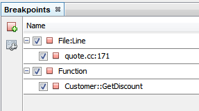
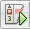
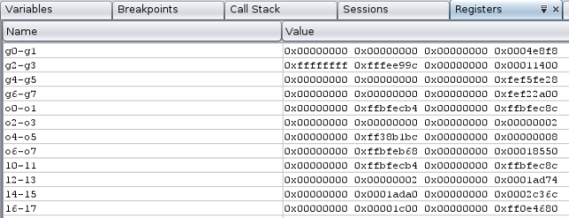
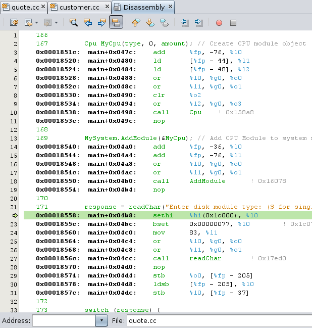

Apache NetBeans
Apache NetBeansLatest release
调试 C/C++ 项目教程
| This tutorial needs a review. You can open a JIRA issue, or edit it in GitHub following these contribution guidelines. |
2013 年 3 月 [修订版本号：V8.0-1]
下面的简明教程将为您介绍 NetBeans IDE 中用于调试 C 或 C++ 项目的一些功能。
要求
要学习本教程，您需要具备以下软件和资源。
| 软件或资源 | 要求的版本 |
|---|---|
NetBeans IDE |
|
Java 开发者工具包 (JDK) |
有关下载并安装必需软件的信息，请参见 NetBeans IDE 安装说明和配置 NetBeans IDE 以使用 C/C+/Fortran+。
创建样例项目
带有 C/C++ 的 NetBeans IDE 使用了 gdb 调试器，并提供了很多项目调试功能。要了解这些功能，请使用 Quote （报价）项目。如果还没有创建这个项目，可执行以下操作：
-
选择 "File"（文件）> "New Project"（新建项目）。
-
在项目向导中，依次展开 "Samples"（样例）类别和 "C/C++" 子类别。
-
选择 "Applications"（应用程序）子类别，然后选择
报价项目。单击 "Next"（下一步），然后单击 "Finish"（完成）。
创建断点
您可以随时在代码中创建并操作断点，而不用启动调试会话。
创建和删除行断点
-
在
Quote_1项目中，打开quote.cc文件。 -
在源代码编辑器窗口靠近 171 行 (
response = readChar("Enter disk module type: (S for single disks, R for RAID; Q - exit)", 'S');) 的左旁注中单击，设置一个行断点。该行将以红色突出显示，表明断点已设置。

-
您可以通过单击位于左旁注中的图标来删除断点。
-
选择 "Window"（窗口）> "Debugging"（调试）> "Breakpoints"（断点）打开 "Breakpoints"（断点）窗口。在 C/C++ 节点下列出您的行断点。

-
展开 C/C++ 节点可查看您的断点。

创建函数断点
-
在 "Breakpoints"（断点）窗口左旁注中单击 "Create New Breakpoint"（创建新断点）按钮，或者选择 "Debug"（调试）> "New Breakpoint"（新建断点）（Ctrl+Shift+F8 组合键）以打开 "New Breakpoint"（新建断点）对话框。
-
在 "Debugger Type"（调试器类型）列表中，选择 "Native"（本机）。
-
在 "Breakpoint Type"（断点类型）列表中，选择 "Function"（函数）。
-
在 "Function Name"（函数名）文本字段中键入函数名
Customer::GetDiscount。单击 "OK"（确定）。

-
函数断点已设置，并且已添加到 "Breakpoints"（断点）窗口列表中。

-
单击左旁注中的 "Select Breakpoint Groups"（选择断点组）按钮以将断点组织到不同的组，然后选择 "Type"（类型）。

-
展开 "File:Line"（文件:行）和 "Function"（函数）组以显示您的断点。

启动调试会话
在启动调试会话时，IDE 会启动 gdb 调试器，然后在调试器中运行应用程序。IDE 将自动打开调试器窗口和调试器工具栏，并在 "Output"（输出）窗口中打印调试器输出。
-
通过单击 "Debug Project"（调试项目）按钮  或通过选择 "Debug"（调试）> "Debug Project"（调试项目），为
Quote_1项目启动调试会话。 此时将启动调节器，并运行应用程序。显示调试工具栏。

-
选择 "Window"（窗口）> "Debugging"（调试）> "Sessions"（会话）打开 "Sessions"（会话）窗口。 调试会话将显示在此窗口中。
检查应用程序状态
-
Quote_1应用程序会提示您在 "Output (Debug)"（输出（调试））窗口中输入信息。 -
在提示 "Enter customer name:"（输入客户名：）后输入客户名。
该应用程序将在您先前设置的 Customer::GetDiscount 函数断点处停止，并且 customer.cc 文件将在编辑器中调用该函数的行中打开。此时 "Breakpoints"（断点）窗口会列出先前设置的两个断点。函数断点的断点图标顶端会出现绿色程序计数器箭头。

-
单击 "Call Stack"（调用堆栈）窗口的标签，或者选择 "Window"（窗口）> "Debugging"（调试）> "Call Stack"（调用堆栈）。此时调用堆栈将显示三个框架。

-
打开 "Variables"（变量）窗口，此时您看到显示了一个变量。
-
单击展开图标以展开此结构。

-
单击工具栏中的 "Continue"（继续）按钮。 此时将执行
GetDiscount函数，同时在 "Output (Debug)"（输出（调试））窗口中显示客户折扣。此时系统会提示输入信息。
-
按照提示输入信息。
程序会在下一个断点（即先前设置的行断点）处停止。在 quote.cc 文件中，断点图标顶端会出现绿色程序计数器箭头，指示程序暂停在哪一行。

-
单击 "Variables"（变量）标签，注意会显示局部变量的详细列表。

-
单击 "Call Stack"（调用堆栈）标签，注意此时堆栈中有一个框架。
-
选择 "Window"（窗口）> "Debugging"（调试）> "Registers"（注册）。 此时将打开 "Registers"（注册）窗口，其中显示注册的当前内容。

-
选择 "Window"（窗口）> "Debugging"（调试）> "Disassembly"（反汇编）。 此时将打开 "Disassembly"（反汇编）窗口，其中显示当前源文件的汇编指令。

-
单击工具栏中的 "Continue"（继续）按钮，并继续按照提示在 "Output"（输出）窗口中输入信息，直到程序完成。
-
按 Enter 键退出程序后，调试会话便会结束。要在程序执行完毕以前结束调试会话，可以在工具栏中单击 "Finish Debugger Session"（完成调试器会话）按钮，或者选择 "Debug"（调试）> "Finish Debugger Session"（完成调试器会话）。
另请参见
有关在 NetBeans IDE 中使用 C/C/Fortran 进行开发的更多文章，请参见 link:https://netbeans.org/kb/trails/cnd.html[+C/C 学习资源+]。
link:mailto:users@cnd.netbeans.org?subject=Feedback:%20Debugging%20C/C+%20Projects%20-%20NetBeans%20IDE%207.4%20Tutorial[+发送有关此教程的反馈意见]